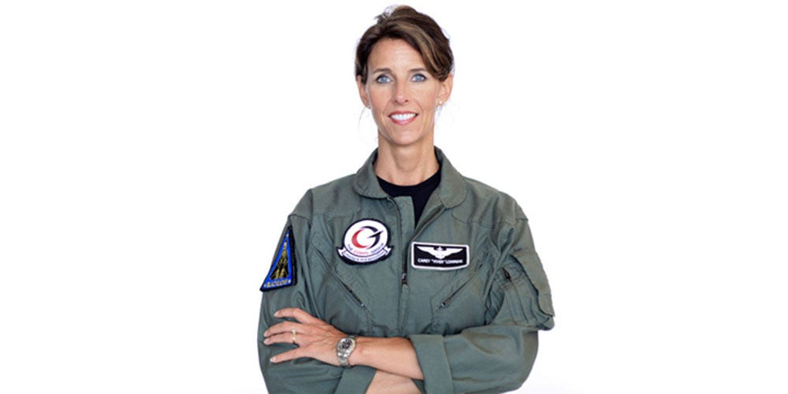
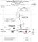

Cockpit as Office
There are tribes of women traveling us safely from place to place


Monitoring this effect because monitoring is the most important skill a pilot should have now a day. Keeping constant eyes on every visual gauge and hear on all possible sounds that can be an alert about a system be it hydraulic or pneumatic or electrical. Computers and actioners have taken the job of handling the difficult maneuvering and shaped the cockpit more and more like a high-class office
for skilled passionate and devoted pilots that took the promise to travel others safely from point A to B using this skill that they learned and are constantly improving and updating for the sake of security of transported people. Constrained passion is not the same as a free hobby. The 330 pilots cannot follow his hobby of looping while transporting people, neither when the plane is empty of passengers because the 330 is not designed for that like the alphabet is. Usages define the design of the system like cost and expenses does and even cognitive reinforcement like what the aircraft handles symbolize and I guess car handles also. Again we say keep it with two hands when we advise someone to keep what we think is important for her or him to hold. Aircraft have spots for holding near airports for traffic congestion because traffic control could give a command to hold on.

This horizontal looping has sense because the aircraft should be always near the airport like the pilot should always at the top of his or her skill.
With the pandemic period, the pilots were kept on the ground for a while so like me they all need side job simulation time. But they are a lot of pilots and not enough simulation center.
but if the distance between the simulation environment and the real environment is big it can negatively impact the real job to be done so the simulation environment should the same as the real environment.
PS: the women pilot tribes and the network effect